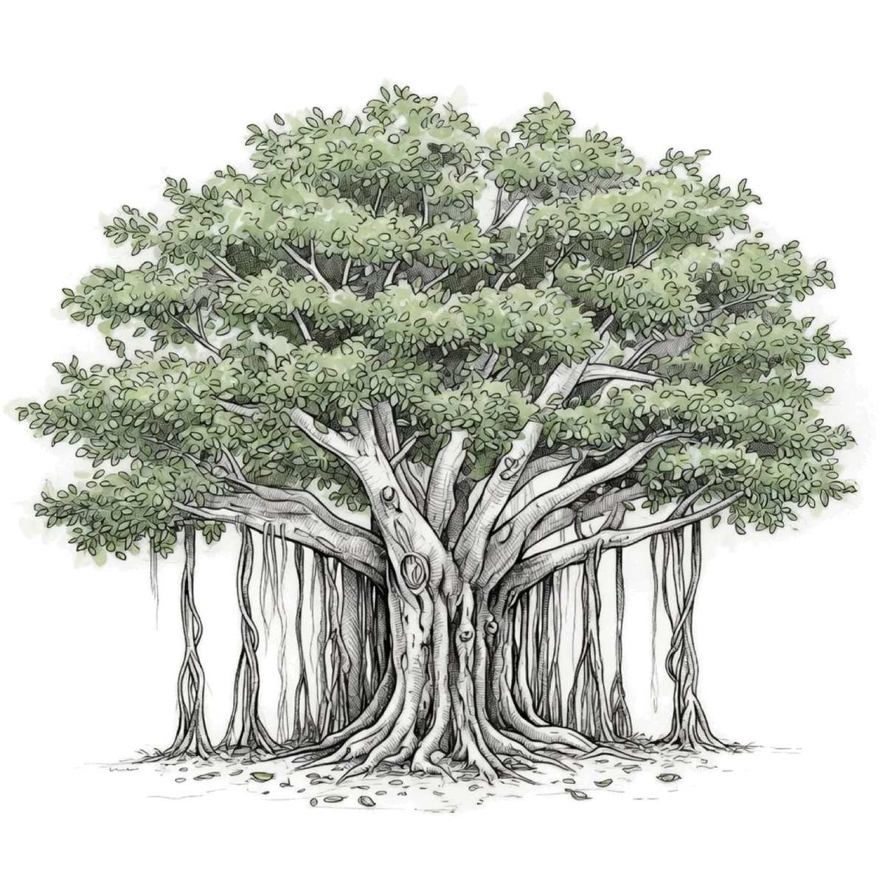

सर्वे भवन्तु सुखिनः सर्वे सन्तु निरामयाः ।
सर्वे भद्राणि पश्यन्तु मा कश्चिद्दुःखभाग्भवेत् ॥
May all be happy. May all be free from illness. May all see what is auspicious. May no one suffer.
empowerment is the best help we can provide
Who we are
The Kanakia Foundation is a private foundation established in 2020, in memory of Chandrakant Devidas Kanakia. For over 50 years, Chandrakant Kanakia provided selfless service to the community in Kandivali, Mumbai, India. The Kanakia Foundation is an attempt to carry on his legacy and honor his memory. The Foundation works to improve and strengthen the health, education and wellness of communities through philanthropic activities in the United States and India.
The Kanakia Foundation envisions a society in which all children receive both primary schooling and an opportunity for higher education, where individuals who need help get it and are empowered to lead healthier lives with dignity and respect.
The foundation is eager to support synergistic organizations that can help achieve these goals by nurturing relevant projects and ensuring long-term benefits to all parties, including society at large.